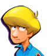

10 |
Règles et informations de base |
 |
Règles de base Les quatre personnages visent la boule de cristal chacun leur tour. Le résultat de la boule de cristal permet de déterminer le nombre de cases sur lesquelles avancer. Au fur et à mesure que la voiture avance selon le chiffre indiqué par la boule de cristal, les joueurs peuvent pointer des pièces ou des pierres précieuses avec leur manette Wii Remote pour les ramasser. Si la voiture s'arrête sur une case qui donne ou prend des pièces, chaque joueur gagne ou perd le montant indiqué sur la case. Le coût des parchemins est divisé de manière équitable entre tous les joueurs, tout comme un mauvais mot de passe est pénalisé de manière équitable entre tous les joueurs. Par contre, les joueurs gagnent des montants différents quand ils ramassent des pièces et des pierres précieuses en se déplaçant sur le plateau et en jouant à des mini-jeux ou en réalisant des défis. Si la voiture est complètement détruite et que les joueurs n'ont pas les 500 pièces nécessaires pour la réparer, la partie est perdue ! Les joueurs remportent la partie et gagnent le trésor de Fazzy quand ils devinent le mot de passe. Ils jouent ensuite au dernier mini-jeu, la course finale, et sont classés en fonction de leurs gains. Les joueurs obtiennent également un trophée et un titre en fonction de leurs performances. Par exemple, obtenir le meilleur score permet de décrocher le titre de Capitaine. Quand les joueurs entrent un mauvais mot de passe, ils perdent 200 pièces (chaque joueur paye autant qu'il peut en fonction de ce qu'il a accumulé), mais la partie continue. En revanche, la partie est perdue si les joueurs perdent toutes leurs pièces. Après avoir récolté 5 indices, ils peuvent choisir Réponse et essayer de deviner le mot de passe ou réinitialiser les indices et le mot de passe et continuer à jouer. Si les joueurs ont moins de 5 indices, trois choix s'offrent à eux : essayer de deviner le mot de passe malgré tout, réinitialiser leurs indices et leur mot de passe et continuer à jouer, ou encore continuer le jeu sans réinitialiser. Réinitialiser la partie vous coûtera 200 pièces. Si vous n'avez pas suffisamment d'argent, vous aurez le choix entre deux options : continuer à jouer ou essayer de trouver la bonne réponse ! Informations de base  Le joueur peut choisir de jouer avec un des quatre personnages : un garçon, une fille, un majordome et un vieillard.
Fazzy est un ami ! Il donne des conseils et vend des indices aux joueurs.
Les quatre personnages prennent place dans la voiture-citrouille fournie par Fazzy et se déplacent tous ensemble. Dans le Défi fantôme, les fantômes peuvent tirer sur la voiture et l'endommager. Si celle-ci est détruite, les joueurs devront payer 500 pièces pour la réparer sur-le-champ. Si les joueurs n'ont pas suffisamment d'argent, la partie est terminée. Si la voiture est seulement endommagée, mais pas détruite, les joueurs peuvent la réparer en passant sur une case Réparer. Quand c'est à un joueur et pas à un CPU de toucher la boule de cristal, celui-ci peut consulter le niveau de dommages de la voiture en passant son curseur dessus.
Les parchemins magiques vous permettent d'obtenir des indices afin de vous aider à deviner le mot de passe et trouver le trésor.
Les joueurs peuvent se faire rapetisser par le sorcier-fantôme afin de passer dans des endroits spéciaux. Lorsque les joueurs quitteront un de ces endroits, le sorcier-fantôme leur rendra leur taille normale. Celui-ci n'apparaît qu'à l'entrée d'endroits bien précis.
Utilisez l'icône Boule de cristal pour déterminer le nombre de cases sur lesquelles avancer. Les icônes fournissant des informations sur les personnages se trouvent dans les coins de l'écran. Celles-ci vous donnent des informations sur le joueur et sur ses gains. |


 |
 |
 |